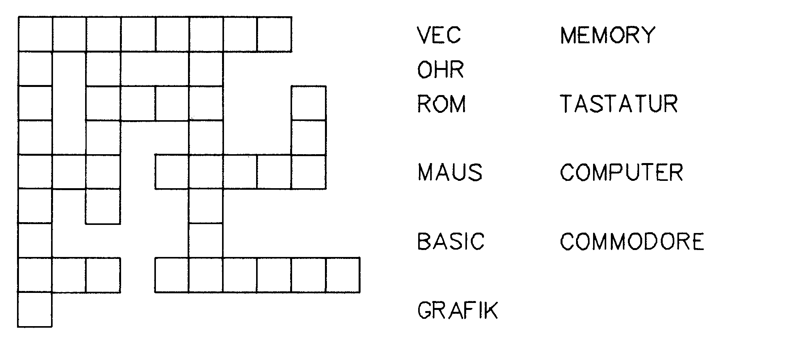
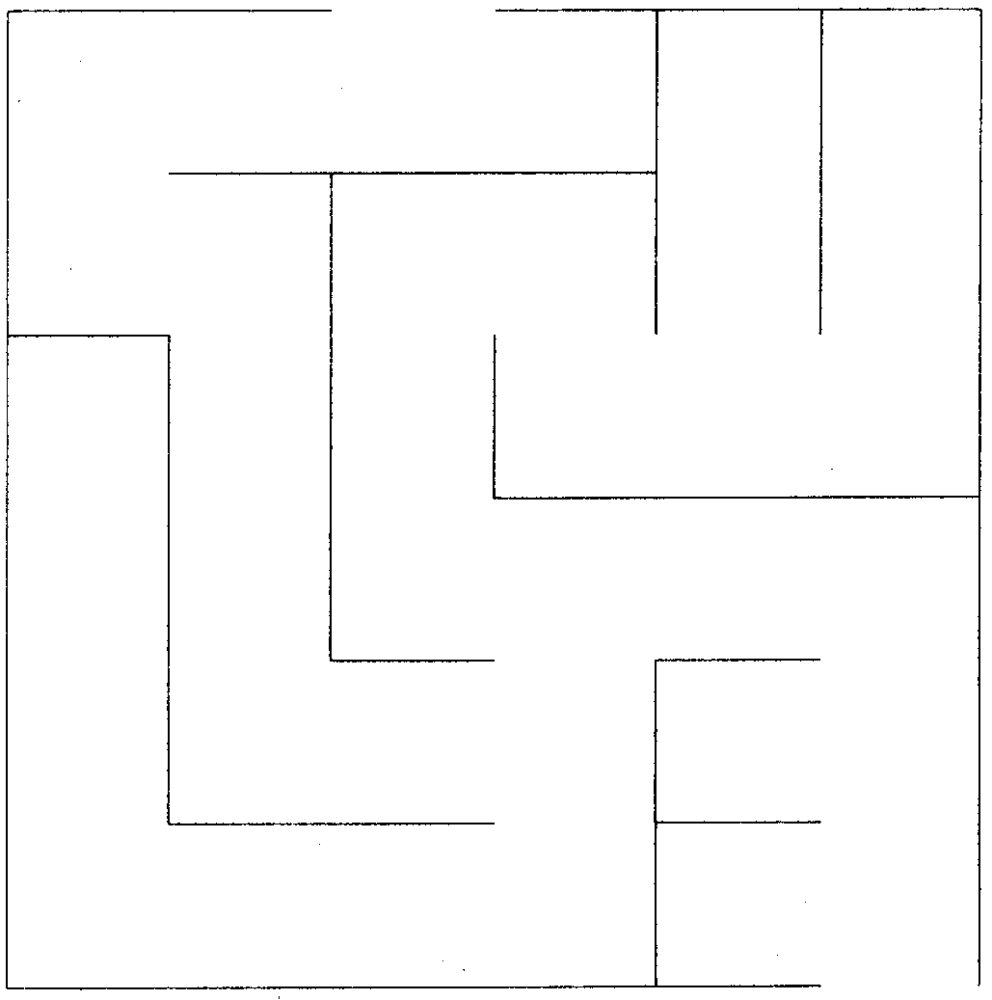

Computer-Knobeleien (Teil 5)
Zwei neue Computer-Knobeleien stellen wir in dieser Folge vor: Kriss-Kross-Rätselgitter und Theseus.
Vielen Menschen ist das Lösen von Kreuzworträtseln zu mühsam. Oftmals bringt das Fehlen einiger weniger Schlüsselworte die vollständige Lösung zum Scheitern. Ein kurzweiliger Verwandter des Kreuzworträtsels ist das Kriss-Kross. Bei diesem Rätsel geht es darum, eine vorgegebene Wortliste passend in ein Diagramm einzusetzen. Die Wortliste ist zur Übersichtlichkeit nach Länge und Alphabet geordnet. Das Einsetzen der Worte in das Diagramm erfolgt nach denselben Regeln wie beim herkömmlichen Kreuzworträtsel: Überall dort, wo sich zwei Worte kreuzen, müssen Sie einen gemeinsamen Buchstaben besitzen. Einziger Unterschied ist, daß die einzusetzenden Worte bekannt sind und nur noch an der richtigen Stelle plaziert werden sollen. Bild 1 zeigt ein Beispiel, jedoch mit sehr kleinen Abmessungen.

Die wichtigste Voraussetzung für die automatische Erstellung des Diagramms ist natürlich die Wortbibliothek. Bei der Wortauswahl kann prinzipiell nach freiem Ermessen verfahren werden. Dennoch wird ein Programm, mit einer in Länge und Syntax gut gemischten Wortkombination, die interessanteren Diagramme berechnen. Ebenso haben Sie freie Wahl, ob Sie dem Programm vorschreiben, alle Worte genau einmal zu benutzen, oder ob nur eine Teilmenge verwertet wird. Ausreichend ist schon ein Schatz von 500 bis 1000 Worten, um vielfältige Diagramme zu erzeugen. Sinnvoll ist die Speicherung der Worte in alphabetischer Ordnung in DATA-Zeilen oder auch in Stringfeldern, je nachdem, welche Programmiersprache Sie bevorzugen.
Die Kriss-Kross-Konstruktion ist ein klassisches Beispiel für das Backtracking-Verfahren. Dieses Verfahren ist in der Lage, bereits getätigte Schritte wieder zurückzunehmen. Backtracking ist nichts anderes als die Suche innerhalb eines Baumes, die zuerst in die Tiefe (Depth-First-Search) erfolgt. Hierbei analysiert das Programm zunächst immer nur einen Nachfolger eines Knotens und arbeitet sich so ohne Umwege bis zu einer festgelegten Analysetiefe vor. Dabei werden alle durchlaufenen Knoten auf einem Stapelspeicher abgelegt, der nach dem LIFO-Prinzip (last in, first out) organisiert ist. Ist die ÄAnalysetiefe erreicht und die Endstellung als nicht zufriedenstellend bewertet, so wandert das Programm zum zuletzt auf dem Stapel abgelegten Knoten zurück. Von hieraus versucht es wieder in die Tiefe des Baumes vorzudringen. Ist analysiert, so wandert das Programm einen weiteren Knoten zurück.
Backtracking-Suche in der Tiefe
Die wohl bekannteste und auch anschaulichste Anwendung für das Backtracking ist die Weg-Suche durch einen Irrgarten. Backtracking-Programme wandern in jedem Pfad bis ans Ende. Wenn Sie in einer Sackgasse stecken bleiben, so wandern Sie jeweils zur letzten Verzweigung zurück.
Die Anwendung des Backtracking auf unseren speziellen Fall wollen wir nun näher untersuchen. Zu Beginn wird das Programm ein beliebiges Wort auswählen und in die linke obere Ecke eines karierten Feldes setzen. Am Ende des Wortes muß, wie auch in allen folgenden Fällen ein schwarzes Kästchen angefügt werden, um das gesetzte Wort von nachfolgenden zu trennen.
Alle Buchstaben des ersten Wortes dienen anschließend als Anfangsbuchstaben für die nächsten Worte. Das Programm entwickelt nun den Suchbaum in die Tiefe, indem es die Worte konsequent nacheinander verkettet. Erst wenn es nicht mehr weiter geht, setzt die Bewertung des entstandenen Diagramms ein. Anschließend wird »rückwärts konstruiert« und gemäß dem Backtracking neue Endstellungen angesteuert. An dieser Stelle beginnen die Anforderungen an die Leistungsfähigkeit des Programms: Mit der fortschreitenden Konstruktion des Diagramms müssen die Worte gefunden werden, die eine hohe Engmaschigkeit fördern.
Kriss-Kross-Bäume wachsen sehr schnell, schneller als die meisten Spielbäume, die wir bisher kennengelernt haben. Das liegt zum einen an der Vielzahl der miteinander zu kombinierenden Objekte (Wortbibliothek), zum anderen an der hohen Zahl der Kombinationsmöglichkeiten. Es ist daher unumgänglich, daß für große Diagramme sogenante »Heuristiken« eingesetzt werden. Das sind Regeln, die sich aus dem Wissen über den Diagrammaufbau ergeben. Beispielsweise ist es sinnlos, drei oder mehr lange Worte parallel nebeneinander zu stellen, denn daraus entsteht eine große Zahl neuer Worte mit drei Buchstaben. Drei zusammenhängende Buchstaben sollten aber immer ein sinnvolles Wort ergeben. Eine weitere Heuristik beispielsweise hilft vermeiden, daß die Depth-First-Suche lange, wenig verknüpfte Diagramme erstellt.
Die Qualität eines Kriss-Kross-Diagramms ist proportional zu seiner Engmaschigkeit. Das heißt: Je dichter die Worte aneinander gebunden werden, desto interessanter und auch anspruchsvoller wird es, das Kriss-Kross zu lösen. Die Verflechtung kann in vielfältiger Weise bewertet werden. Das schließt beispielsweise das Verhältnis der Diagrammfläche zum kleinsten umschließenden Rechteck ein oder die durchschnittliche Anzahl der Kreuzungen pro Wort. Für das Feld bietet sich beim C 64 natürlich der Zeichenbildschirm an. Mit diesem 40 x25 Zeichen großen Feld lassen sich bereits interessante Ergebnisse erzielen. Das fertige Programm ist dann mit wenig Aufwand auf größere Felder erweiterbar. Ob Sie zu guter Letzt das Ergebnis auf dem Drucker ausgeben oder ob Sie einen scrollenden Bildschirm einrichten, ist einzig Ihnen überlassen.
Schreiben Sie ein Programm, daß verschiedene Wortlisten verarbeiten kann und daraus ein wohlgeformtes Kriss-Kross-Gitter aufstellt. Die Ausmaße sollte der Benutzer vorwählen können. Die maximale Größe des Gitters richtet sich natürlich nach dem Umfang der Wortbibliothek, die dem Programm zur Verfügung gestellt wird. Es ist denkbar, wenn auch unwahrscheinlich, daß eine Wortbibliothek keine Lösung ermöglicht (wie auch beim Kreuzworträtsel darf das Diagramm nicht aus getrennten Teilen bestehen). Wenn Sie sich langsam an das Problem herantasten wollen, dann empfehle ich Ihnen, daß Sie Ihr Programm zunächst nur Wortlisten in vorgefertigte Leer-Diagramme einsetzen lassen. Hierdurch können Sie zunächst darauf verzichten, auf hohe Verflechtung zu achten und Sie sammeln Erfahrungen mit String-Operationen.
Wenn Sie aber das Programmieren auf die Spitze treiben wollen, so entwickeln Sie ein selbstlernendes Programm, das die Diagramme im Dialog mit dem Benutzer entwickelt. Ein solches Programm könnte Vorschläge vom Benutzer annehmen und dadurch seine Wortbibliothek erweitern.
Irre Gärten
Systeme, in denen verschachtelte Wege und Sackgassen den Menschen in die Irre führen, waren schon in der Antike bekannt. Theseus, so die griechische Sage, wurde in das berühmt-berüchtigte kretische Labyrinth gesperrt, aus dem er entweder herausfinden oder in die Hände des mordenden Stiers, Minotaurus, fallen sollte. Ihm zu Ehren wollen wir die folgende Knobelei Theseus nennen.
Uns soll die Konstruktion einfacher Irrgärten innerhalb eines m x n großen rechteckigen Gitters interessieren. Das Gitter besteht ausmxn Quadraten. Damit ein Irrgarten entsteht, muß eine Anzahl der Quadratseiten (Segmente) aus dem Gitter entfernt werden. Daß hierbei nach einem gewissen System vorzugehen ist, damit ein Irrgarten wie beispielsweise in Bild 2 entsteht, leuchtet ein.

Zuerst sollte das Programm Ein- und Ausgang zufällig festlegen. Hierzu werden auf den gegenüberliegenden Seiten des Rechtecks zwei Segmente entfernt. Anschließend entfernt Theseus eine Anzahl Segmente, die den Lösungsweg freimachen. Als letzte Aktion schaffte er eine Verbindung aller Quadrate zum Lösungsweg und bildet dabei die Sackgassen. Das ist bereits alles.
Die Darstellung des Irrgartens in einer Matrix sollte für geübte Basic-Freaks kein Problem darstellen. Lediglich die Programmierung gewisser Regeln sollte ihnen einige Grübeleien bereiten. Beispielsweise muß das Programm »wissen« daß die Sackgassen nicht untereinander verbunden sein dürfen, da sonst mehrere Lösungswege entstehen. Auch stellt die Programmierung verschlungener, abwechslungsreicher Pfade mit der Hilfe von Zufallsfunktionen eine interessante Knobelei dar.
Schreiben Sie Theseus so, daß es auch für möglichst große Vorgaben vonmundn interessante Irrgärten erstellt. Wenn immer das Programm gestartet wird, sollte es einen anderen Irrgarten liefern. Da Sie ohnehin an einigen Stellen die Zufallsfunktion benutzen müssen, gibt es bei der Benutzung der Systemvariablen »TI« als Argument des RND-Befehls keine Probleme. Lediglich bei der Verwendung kleiner m und n werden gelegentlich Kopien entstehen, da die Zahl der verschiedenen Irrgärten von den Seitenlängen stark abhängt. Jedes Labyrinth sollte auf nur einem einzigen Weg zu lösen sein. Auch sollten unbedingt alle Zellen des Gitters erreichbar sein, es sollten also abgeschlossene Räume innerhalb des Labyrinthes vermieden werden. Mit der Auflösung des C 64 sind bereits sehr komplexe Labyrinthe darstellbar. Natürlich können Sie den Programmierspaß noch weiter treiben: Benutzen Sie das oben beschriebene Backtracking-Verfahren, damit der Computer auch die Lösung zeigen kann. Wenn Sie diesen Prozeß zusätzlich als eine Schlange darstellen, die sich durch das Labyrinth windet, dabei länger und kürzer wird, bis sie schließlich zum Ausgang findet, so ist die Sache perfekt.
(Matthias Rosin/dm)